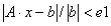

这些参数可用于调整求解污染物方程的方法。通常，您不需要更改这些默认值。然而，如下所述，某些类型的问题可能会受益于使用不同的可用解决技术。
线性污染物求解器： 默认求解器和 CVODE 求解器都需要使用线性求解方法。对线性求解器的需求在 污染物分析 部分。对于每个房间，您选择的痕量或非痕量污染物的每种污染物种类都有一个方程。非痕量污染物的质量分数在迭代循环中求解，该迭代循环也确定气流（因为非痕量污染物影响房间空气密度和压力）。计算流量后即可求解痕量污染物的质量分数（因为它们不影响房间空气密度）。这些计算需要求解联立、非对称、线性代数方程。
提供了四种线性求解方法——两种直接法和两种迭代法。迭代算法是连续过度松弛（SOR）和双共轭梯度（BCG）。直接方法是天际线（或“轮廓”）算法和高斯 LU 分解方法。这四种方法已按内存使用增加的顺序列出。迭代方法可能比更可靠的直接方法更快，也可能不更快。在对大型项目进行长时间瞬态仿真之前，测试不同的方法以确定哪种方法可以提供最佳性能可能会很有用。
LU: LU 分解使用完整（非稀疏）矩阵，用于验证其他方法的解决方案，而不是一般用途。
以下属性适用于线性求解器：

.CVODE 非线性污染物求解器： 选择实现 CVODE 求解器时要使用的方法和相关参数。
最大时间步长： CVODE 根据其精度要求限制其时间步长，并适应任何预定的事件。该值限制 CVODE 将采取的最长时间步长（默认值 0 不施加人为限制）。限制 CVODE 时间步长的原因之一是为了让控制网络能够响应污染物浓度的变化。控制元件在污染物传输求解器的步骤之间运行，因此如果 CVODE 采取很长的步骤，它可能会干扰楼宇控制系统的模拟。请注意，没有必要设置最大时间步长来确保数据写入模拟结果文件，因为 CVODE 始终插入其预测以在请求的时间提供输出。
相对收敛因子： 默认值为 1 x 10 -6.
绝对收敛因子： 默认值为 1 x 10 -13 公斤/公斤。
循环模拟的收敛： 当峰值浓度（所有房间中的所有污染物）的相对差异小于相对收敛 e1 时，假定收敛。 绝对收敛 e2 用于防止质量分数可忽略不计的房间和污染物在解决方案中占主导地位。
一维选项： 这些选项提供对使用时可以实现的一维仿真功能的控制 短时间步长法 执行污染物模拟。
一维房间模型： 选择此方法可对已定义为一维房间的房间实施显式一维对流/扩散池求解方法。这将沿着用户指定的一维轴将房间细分为单元。
一维管道模型： 选择此方法可实现管道的显式一维对流/扩散单元求解方法。这将根据通过管道段的流速将所有管道段沿其长度细分为单元。有效扩散系数将基于污染物的雷诺数和分子扩散系数。
如果速度的乘积 u 和时间步长 Dt 在给定的管道段中小于 单元尺寸 参数，然后使用欧拉方法，单元大小等于 单元尺寸 参数，否则采用拉格朗日方法，有效单元大小为 u×Dt 随着速度的增加，联立方程的解更少。
可变结温： 使用一维管道模型时，您可以让 CONTAM 实现可变结温，以根据入口终端温度来考虑管道系统内空气的对流换热。使用此选项时，将忽略结温属性，并从它们所在的房间获取终端入口温度。